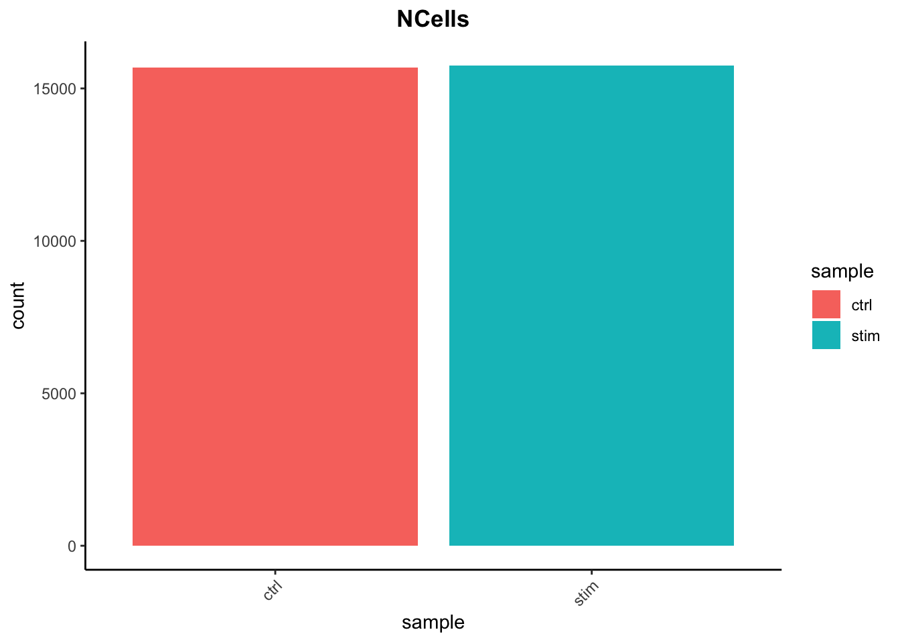
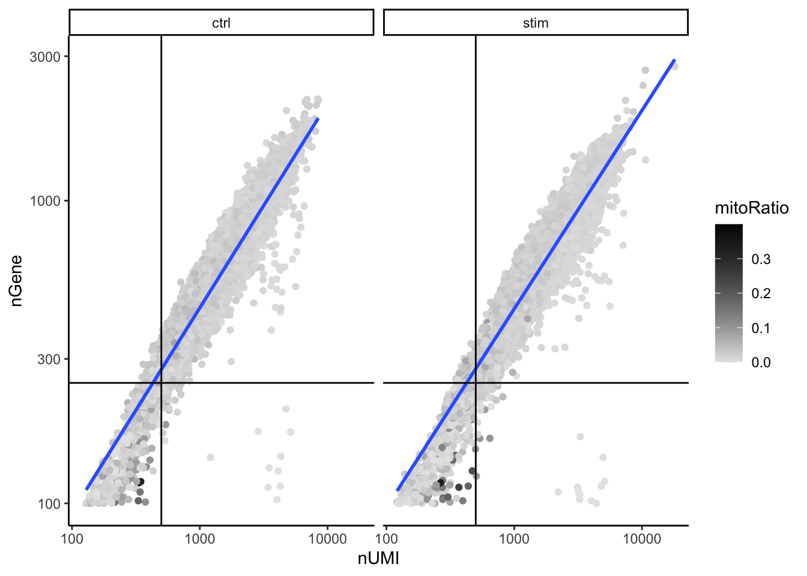

# Explore merged metadata
View(merged_seurat@meta.data)Single-cell RNA-seq: Quality Control Analysis
Approximate time: 90 minutes
Learning Objectives:
- Construct quality control metrics and visually evaluate the quality of the data
- Apply appropriate filters to remove low quality cells
Single-cell RNA-seq: Quality control

Each step of this workflow has its own goals and challenges. For QC of our raw count data, they include:
Goals:
- To filter the data to only include true cells that are of high quality, so that when we cluster our cells it is easier to identify distinct cell type populations
- To identify any failed samples and either try to salvage the data or remove from analysis, in addition to, trying to understand why the sample failed
Challenges:
- Delineating cells that are poor quality from less complex cells
- Choosing appropriate thresholds for filtering, so as to keep high quality cells without removing biologically relevant cell types
Recommendations:
- Have a good idea of your expectations for the cell types to be present prior to performing the QC. For instance, do you expect to have low complexity cells or cells with higher levels of mitochondrial expression in your sample? If so, then we need to account for this biology when assessing the quality of our data.
Generating quality metrics
When data is loaded into Seurat and the initial object is created, there is some basic metadata asssembled for each of the cells in the count matrix. To take a close look at this metadata, let’s view the data frame stored in the meta.data slot of our merged_seurat object:

There are three columns of information:
orig.ident: this column will contain the sample identity if known. It will default to the value we provided for theprojectargument when loading in the datanCount_RNA: this column represents the number of UMIs per cellnFeature_RNA: this column represents the number of genes detected per cell
In order to create the appropriate plots for the quality control analysis, we need to calculate some additional metrics. These include:
- Number of genes detected per UMI: this metric with give us an idea of the complexity of our dataset (more genes detected per UMI, more complex our data)
- Mitochondrial ratio: this metric will give us a percentage of cell reads originating from the mitochondrial genes
Novelty score
This value is quite easy to calculate, as we take the log10 of the number of genes detected per cell and the log10 of the number of UMIs per cell, then divide the log10 number of genes by the log10 number of UMIs. The novelty score and how it relates to complexity of the RNA species, is described in more detail later in this lesson.
# Add number of genes per UMI for each cell to metadata
merged_seurat$log10GenesPerUMI <- log10(merged_seurat$nFeature_RNA) / log10(merged_seurat$nCount_RNA)Mitochondrial Ratio
Seurat has a convenient function that allows us to calculate the proportion of transcripts mapping to mitochondrial genes. The PercentageFeatureSet() function takes in a pattern argument and searches through all gene identifiers in the dataset for that pattern. Since we are looking for mitochondrial genes, we are searching any gene identifiers that begin with the pattern “MT-”. For each cell, the function takes the sum of counts across all genes (features) belonging to the “Mt-” set, and then divides by the count sum for all genes (features). This value is multiplied by 100 to obtain a percentage value.
Note
For our analysis, rather than using a percentage value we would prefer to work with the ratio value. As such, we will reverse that last step performed by the function by taking the output value and dividing by 100.
# Compute percent mito ratio
merged_seurat$mitoRatio <- PercentageFeatureSet(object = merged_seurat, pattern = "^MT-")
merged_seurat$mitoRatio <- merged_seurat@meta.data$mitoRatio / 100
Note
The pattern provided (“^MT-”) works for human gene names. You may need to adjust the pattern argument depending on your organism of interest. Additionally, if you weren’t using gene names as the gene ID then this function wouldn’t work as we have used it above as the pattern will not suffice. Since there are caveats to using this function, it is advisable to manually compute this metric. If you are interested, we have code available to compute this metric on your own.
Additional metadata columns
We are a now all set with quality metrics required for assessing our data. However, we would like to include some additional information that would be useful to have in our metadata including cell IDs and condition information.
When we added columns of information to our metadata file above, we simply added it directly to the metadata slot in the Seurat object using the $ operator. We could continue to do so for the next few columns of data, but instead we will extract the dataframe into a separate variable. In this way we can work with the metadata data frame as a seperate entity from the seurat object without the risk of affecting any other data stored inside the object.
Let’s begin by creating the metadata dataframe by extracting the meta.data slot from the Seurat object:
# Create metadata dataframe
metadata <- merged_seurat@meta.dataNext, we’ll add a new column for cell identifiers. This information is currently located in the row names of our metadata dataframe. We will keep the rownames as is and duplicate it into a new column called cells:
# Add cell IDs to metadata
metadata$cells <- rownames(metadata)You should see that each cell ID has a ctrl_ or stim_ prefix as we had specified when we merged the Seurat objects. We can use this prefix to create a new column indicating which condition each cell is classfied under. We will call this column sample:
# Create sample column
metadata$sample <- NA
metadata$sample[which(str_detect(metadata$cells, "^ctrl_"))] <- "ctrl"
metadata$sample[which(str_detect(metadata$cells, "^stim_"))] <- "stim"And finally, we will rename some of the existing columns in our metadata dataframe to be more intuitive:
# Rename columns
metadata <- metadata %>%
dplyr::rename(seq_folder = orig.ident,
nUMI = nCount_RNA,
nGene = nFeature_RNA)Now you are all setup with the metrics you need to assess the quality of your data! Your final metadata table will have rows that correspond to each cell, and columns with information about those cells:

Saving the updated metadata to our Seurat object
Before we assess our metrics we are going to save all of the work we have done thus far back into our Seurat object. We can do this by simply assigning the dataframe into the meta.data slot:
# Add metadata back to Seurat object
merged_seurat@meta.data <- metadata
# Create .RData object to load at any time
save(merged_seurat, file="../data/merged_filtered_seurat.RData")Assessing the quality metrics
Now that we have generated the various metrics to assess, we can explore them with visualizations. We will assess various metrics and then decide on which cells are low quality and should be removed from the analysis:
- Cell counts
- UMI counts per cell
- Genes detected per cell
- Complexity (novelty score)
- Mitochondrial counts ratio
What about doublets?
In single-cell RNA sequencing experiments, doublets are generated from two cells. They typically arise due to errors in cell sorting or capture, especially in droplet-based protocols involving thousands of cells. Doublets are obviously undesirable when the aim is to characterize populations at the single-cell level. In particular, they can incorrectly suggest the existence of intermediate populations or transitory states that do not actually exist. Thus, it is desirable to remove doublet libraries so that they do not compromise interpretation of the results.
Why aren’t we checking for doublets?
Many workflows use maximum thresholds for UMIs or genes, with the idea that a much higher number of reads or genes detected indicate multiple cells. While this rationale seems to be intuitive, it is not accurate. Also, many of the tools used to detect doublets tend to get rid of cells with intermediate or continuous phenotypes, although they may work well on datasets with very discrete cell types. Scrublet is a popular tool for doublet detection, but we haven’t adequately benchmarked it yet. Currently, we recommend not including any thresholds at this point in time. When we have identified markers for each of the clusters, we suggest exploring the markers to determine whether the markers apply to more than one cell type.
Cell counts
The cell counts are determined by the number of unique cellular barcodes detected. For this experiment, between 12,000 -13,000 cells are expected.
In an ideal world, you would expect the number of unique cellular barcodes to correpsond to the number of cells you loaded. However, this is not the case as capture rates of cells are only a proportion of what is loaded. For example, the inDrops cell capture efficiency is higher (70-80%) compared to 10X which is between 50-60%.
Note
The capture efficiency could appear much lower if the cell concentration used for library preparation was not accurate. Cell concentration should NOT be determined by FACS machine or Bioanalyzer (these tools are not accurate for concentration determination), instead use a hemocytometer or automated cell counter for calculation of cell concentration._
The cell numbers can also vary by protocol, producing cell numbers that are much higher than what we loaded. For example, during the inDrops protocol, the cellular barcodes are present in the hydrogels, which are encapsulated in the droplets with a single cell and lysis/reaction mixture. While each hydrogel should have a single cellular barcode associated with it, occasionally a hydrogel can have more than one cellular barcode. Similarly, with the 10X protocol there is a chance of obtaining only a barcoded bead in the emulsion droplet (GEM) and no actual cell. Both of these, in addition to the presence of dying cells can lead to a higher number of cellular barcodes than cells.
# Visualize the number of cell counts per sample
metadata %>%
ggplot(aes(x=sample, fill=sample)) +
geom_bar() +
theme_classic() +
theme(axis.text.x = element_text(angle = 45, vjust = 1, hjust=1)) +
theme(plot.title = element_text(hjust=0.5, face="bold")) +
ggtitle("NCells")
We see over 15,000 cells per sample, which is quite a bit more than the 12-13,000 expected. It is clear that we likely have some junk ‘cells’ present.
UMI counts (transcripts) per cell
The UMI counts per cell should generally be above 500, that is the low end of what we expect. If UMI counts are between 500-1000 counts, it is usable but the cells probably should have been sequenced more deeply.
# Visualize the number UMIs/transcripts per cell
metadata %>%
ggplot(aes(color=sample, x=nUMI, fill= sample)) +
geom_density(alpha = 0.2) +
scale_x_log10() +
theme_classic() +
ylab("Cell density") +
geom_vline(xintercept = 500)We can see that majority of our cells in both samples have 1000 UMIs or greater, which is great.
Genes detected per cell
We have similar expectations for gene detection as for UMI detection, although it may be a bit lower than UMIs. For high quality data, the proportional histogram should contain a single large peak that represents cells that were encapsulated. If we see a small shoulder to the left of the major peak (not present in our data), or a bimodal distribution of the cells, that can indicate a couple of things. It might be that there are a set of cells that failed for some reason. It could also be that there are biologically different types of cells (i.e. quiescent cell populations, less complex cells of interest), and/or one type is much smaller than the other (i.e. cells with high counts may be cells that are larger in size). Therefore, this threshold should be assessed with other metrics that we describe in this lesson.
# Visualize the distribution of genes detected per cell via histogram
metadata %>%
ggplot(aes(color=sample, x=nGene, fill= sample)) +
geom_density(alpha = 0.2) +
theme_classic() +
scale_x_log10() +
geom_vline(xintercept = 300)
Complexity
We can evaluate each cell in terms of how complex the RNA species are by using a measure called the novelty score. The novelty score is computed by taking the ratio of nGenes over nUMI. If there are many captured transcripts (high nUMI) and a low number of genes detected in a cell, this likely means that you only captured a low number of genes and simply sequenced transcripts from those lower number of genes over and over again. These low complexity (low novelty) cells could represent a specific cell type (i.e. red blood cells which lack a typical transcriptome), or could be due to an artifact or contamination. Generally, we expect the novelty score to be above 0.80 for good quality cells.
# Visualize the overall complexity of the gene expression by visualizing the genes detected per UMI (novelty score)
metadata %>%
ggplot(aes(x=log10GenesPerUMI, color = sample, fill=sample)) +
geom_density(alpha = 0.2) +
theme_classic() +
geom_vline(xintercept = 0.8)Mitochondrial counts ratio
This metric can identify whether there is a large amount of mitochondrial contamination from dead or dying cells. We define poor quality samples for mitochondrial counts as cells which surpass the 0.2 mitochondrial ratio mark, unless of course you are expecting this in your sample.
# Visualize the distribution of mitochondrial gene expression detected per cell
metadata %>%
ggplot(aes(color=sample, x=mitoRatio, fill=sample)) +
geom_density(alpha = 0.2) +
scale_x_log10() +
theme_classic() +
geom_vline(xintercept = 0.2)
Reads per cell
This is another metric that can be useful to explore; however, the workflow used would need to save this information to assess. Generally, with this metric you hope to see all of the samples with peaks in relatively the same location between 10,000 and 100,000 reads per cell.
Joint filtering effects
Considering any of these QC metrics in isolation can lead to misinterpretation of cellular signals. For example, cells with a comparatively high fraction of mitochondrial counts may be involved in respiratory processes and may be cells that you would like to keep. Likewise, other metrics can have other biological interpretations. A general rule of thumb when performing QC is to set thresholds for individual metrics to be as permissive as possible, and always consider the joint effects of these metrics. In this way, you reduce the risk of filtering out any viable cell populations.
Two metrics that are often evaluated together are the number of UMIs and the number of genes detected per cell. Here, we have plotted the number of genes versus the number of UMIs coloured by the fraction of mitochondrial reads. Jointly visualizing the count and gene thresholds and additionally overlaying the mitochondrial fraction, gives a summarized persepective of the quality per cell.
# Visualize the correlation between genes detected and number of UMIs and determine whether strong presence of cells with low numbers of genes/UMIs
metadata %>%
ggplot(aes(x=nUMI, y=nGene, color=mitoRatio)) +
geom_point() +
scale_colour_gradient(low = "gray90", high = "black") +
stat_smooth(method=lm) +
scale_x_log10() +
scale_y_log10() +
theme_classic() +
geom_vline(xintercept = 500) +
geom_hline(yintercept = 250) +
facet_wrap(~sample)
Good cells will generally exhibit both higher number of genes per cell and higher numbers of UMIs (upper right quadrant of the plot). Cells that are poor quality are likely to have low genes and UMIs per cell, and correspond to the data points in the bottom left quadrant of the plot. With this plot we also evaluate the slope of the line, and any scatter of data points in the bottom right hand quadrant of the plot. These cells have a high number of UMIs but only a few number of genes. These could be dying cells, but also could represent a population of a low complexity celltype (i.e red blood cells).
Mitochondrial read fractions are only high in particularly low count cells with few detected genes (darker colored data points). This could be indicative of damaged/dying cells whose cytoplasmic mRNA has leaked out through a broken membrane, and thus, only mRNA located in the mitochondria is still conserved. We can see from the plot, that these cells are filtered out by our count and gene number thresholds.
Filtering
Cell-level filtering
Now that we have visualized the various metrics, we can decide on the thresholds to apply which will result in the removal of low quality cells. Often the recommendations mentioned earlier are a rough guideline, and the specific experiment needs to inform the exact thresholds chosen. We will use the following thresholds:
- nUMI > 500
- nGene > 250
- log10GenesPerUMI > 0.8
- mitoRatio < 0.2
To filter, we wil go back to our Seurat object and use the subset() function:
# Filter out low quality cells using selected thresholds - these will change with experiment
filtered_seurat <- subset(x = merged_seurat,
subset= (nUMI >= 500) &
(nGene >= 250) &
(log10GenesPerUMI > 0.80) &
(mitoRatio < 0.20))
filtered_seuratAn object of class Seurat
33538 features across 29629 samples within 1 assay
Active assay: RNA (33538 features, 0 variable features)
1 layer present: countsGene-level filtering
Within our data we will have many genes with zero counts. These genes can dramatically reduce the average expression for a cell and so we will remove them from our data. We will start by identifying which genes have a zero count in each cell:
# Extract counts
counts <- GetAssayData(object = filtered_seurat, layer = "counts")
# Output a logical matrix specifying for each gene on whether or not there are more than zero counts per cell
nonzero <- counts > 0Now, we will perform some filtering by prevalence. If a gene is only expressed in a handful of cells, it is not particularly meaningful as it still brings down the averages for all other cells it is not expressed in. For our data we choose to keep only genes which are expressed in 10 or more cells. By using this filter, genes which have zero counts in all cells will effectively be removed.
# Sums all TRUE values and returns TRUE if more than 10 TRUE values per gene
keep_genes <- Matrix::rowSums(nonzero) >= 10
# Only keeping those genes expressed in more than 10 cells
filtered_counts <- counts[keep_genes, ]Finally, take those filtered counts and create a new Seurat object for downstream analysis.
# Reassign to filtered Seurat object
filtered_seurat <- CreateSeuratObject(filtered_counts, meta.data = filtered_seurat@meta.data)
filtered_seuratAn object of class Seurat
14065 features across 29629 samples within 1 assay
Active assay: RNA (14065 features, 0 variable features)
1 layer present: countsRe-assess QC metrics
After performing the filtering, it’s recommended to look back over the metrics to make sure that your data matches your expectations and is good for downstream analysis.
- Extract the new metadata from the filtered Seurat object using the code provided below:
# Save filtered subset to new metadata
metadata_clean <- filtered_seurat@meta.dataPerform all of the same QC plots using the filtered data.
Report the number of cells left for each sample, and comment on whether the number of cells removed is high or low. Can you give reasons why this number is still not ~12K (which is how many cells were loaded for the experiment)?
After filtering for nGene per cell, you should still observe a small shoulder to the right of the main peak. What might this shoulder represent?
When plotting the nGene against nUMI do you observe any data points in the bottom right quadrant of the plot? What can you say about these cells that have been removed?
Saving filtered cells
Based on these QC metrics we would identify any failed samples and move forward with our filtered cells. Often we iterate through the QC metrics using different filtering criteria; it is not necessarily a linear process. When satisfied with the filtering criteria, we would save our filtered cell object for clustering and marker identification.
# Create .RData object to load at any time
save(filtered_seurat, file="../data/seurat_filtered.RData")
Note
The data we are working with is pretty good quality. If you are interested in knowing what ‘bad’ data might look like when performing QC, we have some materials linked here where we explore similar QC metrics of a poor quality sample._